Forsyth station: assembly record
Fill this in as you build. Step numbers match the assembly guide. Generated 2026-11-19 17:46 from
params.py.
Station / build name
Builder
Started
Finished
Before you start: blocking problems in the model
| Step | Problem | Fixed | How |
|---|---|---|---|
| None | |||
Printed parts
Tick one box per copy printed, then one when its fit has been checked.
| Part | Print in | Qty | Printed | Fit | Notes | |
|---|---|---|---|---|---|---|
 | cup_arm | accent ASA | 3 | |||
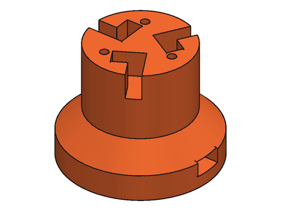 | cup_hub | accent ASA | 1 | |||
 | cup_hub_cap | accent ASA | 1 | |||
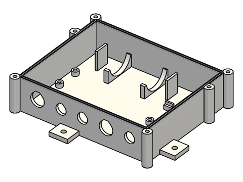 | enclosure_body | white ASA | 1 | |||
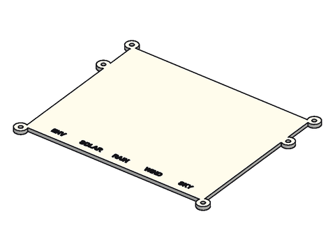 | enclosure_lid | white ASA | 1 | |||
 | rain_base | white ASA | 1 | |||
 | rain_bucket | white ASA | 1 | |||
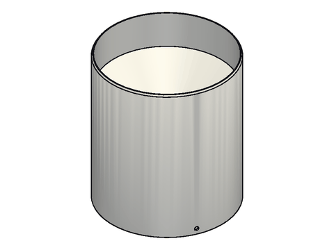 | rain_funnel | white ASA | 1 | |||
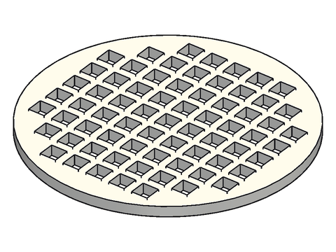 | rain_mesh | white ASA | 1 | |||
 | screen_base | white ASA | 1 | |||
 | screen_cap | white ASA | 1 | |||
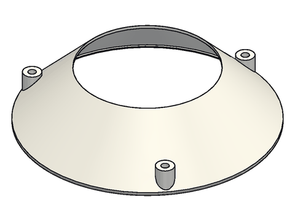 | screen_plate | white ASA | 5 | |||
 | sky_head | white ASA | 1 | |||
 | sky_mount | white ASA | 1 | |||
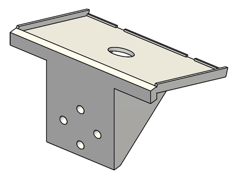 | solar_bracket | white ASA | 1 | |||
 | tpu_box_lid_gasket | TPU | 1 | |||
 | tpu_sky_can_seal | TPU | 1 | |||
 | tpu_washer_gland | TPU | 1 | |||
 | tpu_washer_gx12 | TPU | 3 | |||
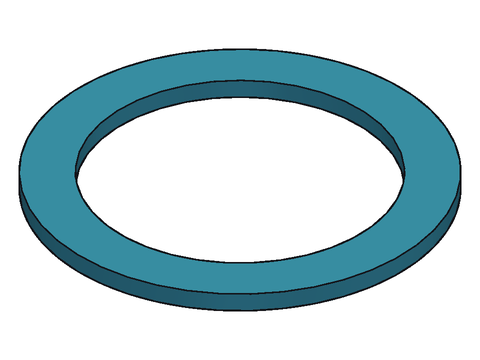 | tpu_washer_gx16 | TPU | 2 | |||
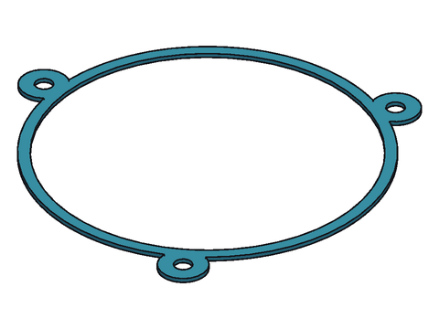 | tpu_wind_lid_gasket | TPU | 1 | |||
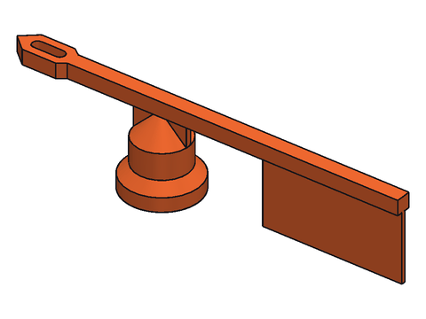 | vane_rotor | accent ASA | 1 | |||
 | wind_body | white ASA | 1 | |||
 | wind_lid | white ASA | 1 | |||
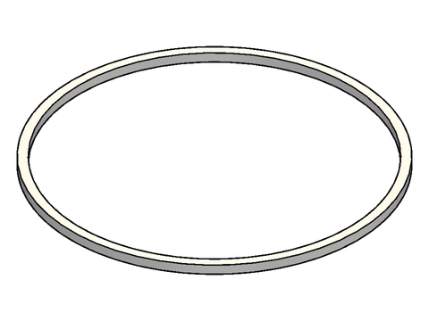 | wind_pcb_ring | white ASA | 1 | |||
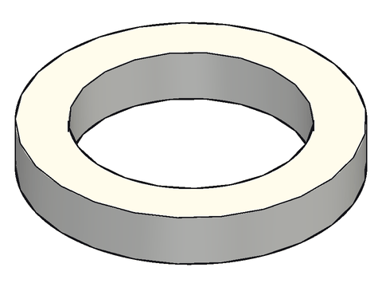 | wind_shim | white ASA | 2 | |||
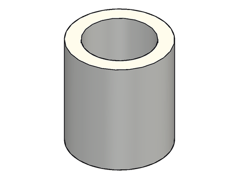 | wind_spacer | white ASA | 2 |
Hardware on hand
| Item | Qty | Have | Notes |
|---|---|---|---|
| 2020 right-angle connector | 2 | ||
| 3 mm closed-cell foam, 40 x 12 mm | 1 | ||
| Ball bearing 5 x 16 x 5, shielded (625ZZ) | 4 | ||
| Disc magnet 4 x 2 | 2 | ||
| Disc magnet 6 x 2 | 2 | ||
| GX12 2-pin socket + plug (SOLAR) | 1 | ||
| GX12 3-pin socket + plug (RAIN) | 1 | ||
| GX12 4-pin socket + plug (SKY) | 1 | ||
| GX16 5-pin socket + plug (WIND) | 1 | ||
| GX16 8-pin socket + plug (ENV) | 1 | ||
| M3 nyloc nut | 1 | ||
| M3 x 10 socket head | 3 | ||
| M3 x 16 socket head (bucket stops) | 2 | ||
| M3 x 50 socket head (bucket axle) | 1 | ||
| M3 x 6 brass heat-set insert, OD 4.2 | 14 | ||
| M3 x 6 socket head | 5 | ||
| M3 x 8 socket head | 14 | ||
| M4 hex nut | 3 | ||
| M4 x 80 socket head (screen clamp) | 3 | ||
| M5 hex nut | 6 | ||
| M5 profile nut for 2020 | 16 | ||
| M5 washer | 12 | ||
| M5 x 10 button head | 6 | ||
| M5 x 12 button head | 6 | ||
| M5 x 25 socket head (vane ballast) | 1 | ||
| M5 x 40 socket head (rotor shaft) | 2 | ||
| M5 x 8 button head | 4 | ||
| Neutral-cure silicone | 1 | ||
| PG7 cable gland | 1 | ||
| Silica gel sachet | 1 | ||
| Two-part epoxy (for the magnets) | 1 | ||
| UV-stable black cable ties | 20 | ||
| 32700 cell | 1 | already owned | |
| 868 MHz right-angle stubby antenna, SMA | 1 | already owned | |
| Board A | 1 | already owned | |
| Board B (sensor carrier, 58 x 70) | 1 | already owned | |
| DFRobot SEN0290 lightning module | 1 | already owned | |
| MLX90614 breakout (GY-906) | 1 | already owned | |
| PMS7003 particle sensor | 1 | already owned | |
| Reed switch, 14 mm glass | 2 | already owned | |
| Solar panel, up to 100 x 70 mm | 1 | already owned | |
| Wind-vane PCB, 60.71 mm disc | 1 | already owned |
Assembly steps
Write down what each step asks you to measure; the app keeps the same fields.
| Step | What | Done | Date | Initials | Notes |
|---|---|---|---|---|---|
| 1. Wind housing | |||||
| 1.1 | Heat-set inserts in the housing ears | ||||
| 1.2 | Bearings and spacer in the floor towerBearing fit in the housing (snug / loose / tight) | ||||
| 1.3 | Anemometer reed switch | ||||
| 1.4 | Cable gland | ||||
| 2. Anemometer | |||||
| 2.1 | Magnet and nut into the hub | ||||
| 2.2 | Arms and cap (seen from below) | ||||
| 2.3 | Hang the rotor from the housingCups coast after a flicks | ||||
| 3. Wind vane | |||||
| 3.1 | Bearings and spacer in the lidBearing fit in the lid (snug / loose / tight) | ||||
| 3.2 | Prepare the vane rotor (seen from below) | ||||
| 3.3 | Vane onto the lid | ||||
| 3.4 | Balance the vaneBallast nuts usedpcsBallast massg | ||||
| 4. Closing the wind kit | |||||
| 4.1 | Vane PCB and its ringPCB reed marked as north | ||||
| 4.2 | Gasket and lidAnemometer closures per turnVane reeds that closeof 8 | ||||
| 5. Rain gauge | |||||
| 5.1 | Stop screws and reed | ||||
| 5.2 | Bolt the base to the crossarm | ||||
| 5.3 | Bucket, magnets and axle | ||||
| 5.4 | Funnel | ||||
| 5.5 | Set and calibrate the tipWater pouredmlTips counted | ||||
| 6. Stevenson screen | |||||
| 6.1 | M4 nuts into the base (seen from below) | ||||
| 6.2 | Bolt the base to the crossarm | ||||
| 6.3 | Board B on its rails | ||||
| 6.4 | Louvres | ||||
| 6.5 | Lightning module under the cap (seen from below) | ||||
| 6.6 | Cap and clamp screws | ||||
| 7. Core box | |||||
| 7.1 | Heat-set inserts | ||||
| 7.2 | Connector sockets in the bottom wall | ||||
| 7.3 | Board A and the antennaAntenna measured: elbow / diameter / lengthmm | ||||
| 7.4 | The cell | ||||
| 7.5 | Gasket and lid | ||||
| 8. Solar bracket | |||||
| 8.1 | Panel into the tray | ||||
| 9. Sky pod | |||||
| 9.1 | Sensor, seal and headLetters on the sensor can | ||||
| 9.2 | Check the fit (section) | ||||
| 10. Onto the mast | |||||
| 10.1 | Crossarm onto the mast | ||||
| 10.2 | Box and solar bracket on the south face | ||||
| 10.3 | Wind kit at the top | ||||
| 10.4 | Sky pod on the north face | ||||
| 10.5 | Which way round, and the cables | ||||
Bench results
| Check | Result |
|---|---|
| Rain: water poured (ml) and tips counted | |
| Rain: ml per tip = poured / tips mm per tip = ml per tip / 9.5 | |
Anemometer: drill test, closures per second against wind speed (for ANEMO_MS_PER_HZ_X1000) | |
| Vane: magnet closes one reed (or two between sectors), never three | |
Box lid: bows between screws? (lower gasket_squeeze if so) | |
| Antenna: RSSI with the lid on and off, same distance | |
| Sky sensor: reading against the screen's air temperature | |
| Mast: which face points north; box antenna end toward the coordinator |